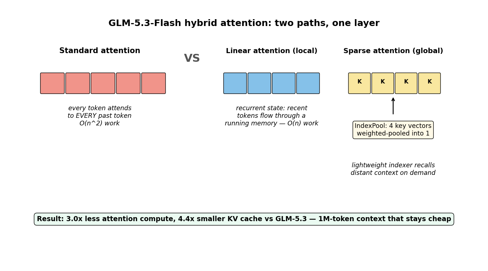
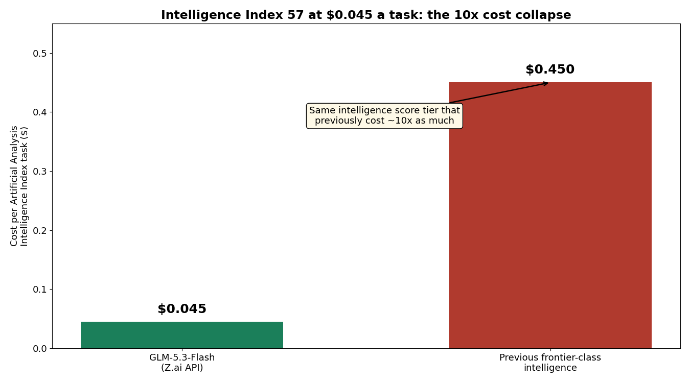
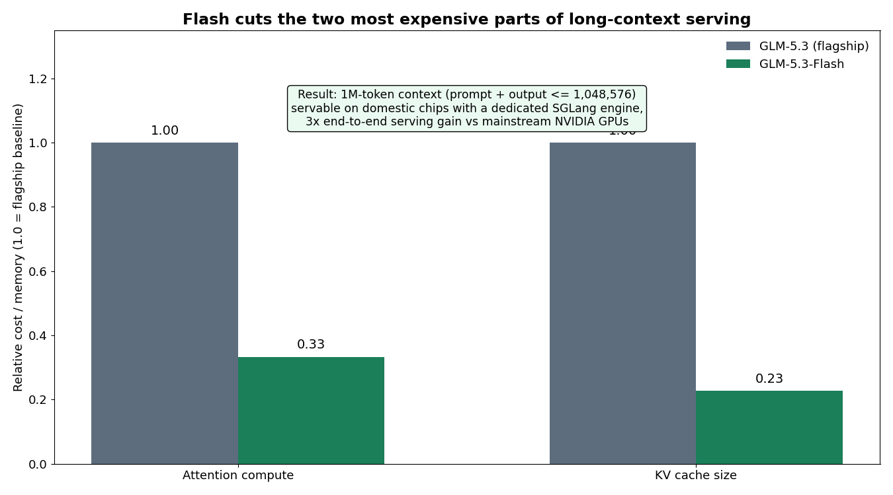
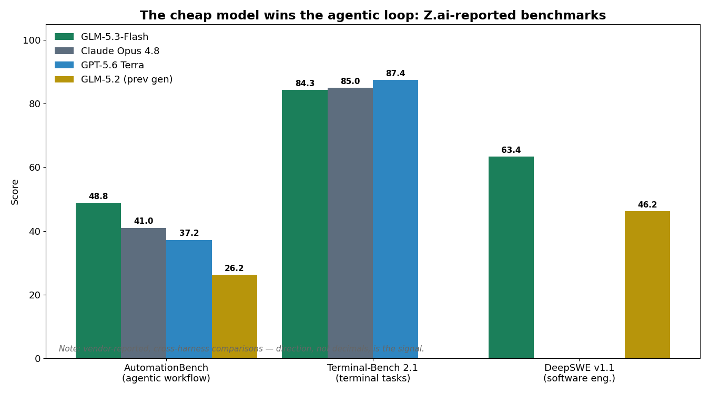

A model with 320 billion parameters just scored 48.8 on AutomationBench — ahead of Claude Opus 4.8 (41.0) and GPT-5.6 Terra (37.2) — while costing one-tenth of its flagship sibling's price. Z.ai's GLM-5.3-Flash is the strongest single datapoint yet for the cost-collapse thesis: frontier-class intelligence on the Artificial Analysis Intelligence Index (score 57) at $0.045 per task, a level that previously cost roughly 10x as much. The secret isn't smaller. It's a different attention architecture: the first open frontier model to fuse sparse and linear attention in one hybrid system.
ELI5: two jobs, two attention types
Standard transformer attention is democratic and expensive: every new token compares itself against every past token. That's O(n²) work — at a million tokens, over a trillion comparisons per layer.
Flash splits the job the way a good assistant works:
- Linear attention (the "recent memory" path): the last tokens flow through a recurrent state that updates token by token — O(n) work. Cheap, local, always on.
- Sparse attention (the "global recall" path): a lightweight indexer reaches back across the full context and pulls only the relevant distant pieces.
Plus a trick called IndexPool: the indexer's key vectors get weighted-pooled 4 into 1, so even the retrieval machinery stays small at a million tokens.

The MoE side does the same kind of ruthless economizing: 320B total parameters, only 18B awake per token (5.6%), routed through 8 of 288 experts, in 45 layers — half the layers and roughly half the active parameters of GLM-4.5 at similar total size. Pretraining ran on a 30-trillion-token multimodal corpus, making Flash the first natively multimodal GLM-5 (text, images, video, files).

How it works: the architecture stack
Per the vLLM recipe and Z.ai's documentation, the 45-layer model interleaves KDA linear-attention layers with NoPE sparse MLA layers:
- Linear path captures local dependencies through a recursive mechanism — the running state never grows with sequence length.
- Sparse path uses a lightweight indexer to recall global context on demand instead of attending to everything.
- IndexPool compresses groups of indexer key vectors 4→1 via weighted pooling, cutting the indexer's latency and memory at 1M context.
- mHC (Manifold-Constrained Hyper-Connections) — 4-wide hyper-connections that Z.ai says improve scaling efficiency.
- Native FP8 weights plus one MTP draft layer (multi-token prediction for cheaper speculative decoding).
The payoff, per Z.ai: 3.0× less attention compute and a 4.4× smaller KV cache than the full GLM-5.3 — which is what makes the 1M-token context window (prompt + output ≤ 1,048,576) economically servable at all. Serving is its own story: Z.ai runs Flash at scale on domestic Chinese AI chips with a dedicated inference engine built on SGLang, claiming a 3× end-to-end serving gain comparable to mainstream NVIDIA GPUs.

SOTA: where the cheap model wins — and where it doesn't
The agentic loop is the headline. AutomationBench measures real workflow automation — the multi-step tool-use loop a production agent actually runs. Flash's 48.8 doesn't just approach the frontier there; it beats Opus 4.8 by 7.8 points (a 19% relative lead) and roughly doubles its own predecessor GLM-5.2 (26.2). It also reports 78.4 on Toolathlon Verified and 62.4 on OfficeQA Pro, ahead of Opus 4.8.
Elsewhere it's a near-match. Terminal-Bench 2.1: 84.3, within 0.7 points of Opus 4.8 (85.0) and 3.1 of GPT-5.6 Terra (87.4). DeepSWE v1.1: 63.4, up 17.2 points over GLM-5.2's 46.2. HLE: 55.3. Artificial Analysis measures 48.7 output tokens/sec with 1.52s time-to-first-token — fast, but verbose.

Honest caveats, because the numbers come with footnotes. Nearly all comparisons are Z.ai-reported with per-benchmark harness differences — the model card's own footnotes specify temperature, context limits, and judge models per test, so treat cross-model gaps as direction, not gospel. Two weak flanks: vision trails (BabyVision and MVbench lag Gemini 3.7 Flash), and the weights are MIT-promised, not yet shipped — the model is open-weight in roadmap, API-only today. Reasoning is always on (low/high/max effort, cannot be disabled). And the adversarial angle: an independent lab analysis verified the cyber-capability claims beyond vendor self-report — including one Flash-specific exploit chain that cost $20.40 to build. Cheap intelligence is dual-use intelligence.
The takeaway
The 2026 story in open models isn't just "bigger and cheaper" — it's architecturally cheaper. Flash didn't win by distilling a bigger model or cutting corners; it won by redesigning the attention layer so that long context stops being the expensive part. 3.0× less attention compute, 4.4× less KV cache, 10× the price efficiency — those are architecture wins, and they compound: every agentic loop that runs 20 tool calls on a 1M-token context gets cheaper at the same time.
Three things to do with this: (1) if you route agents by cost, re-run your price-performance ranking — a $0.15/$0.50 model (cached input $0.029) that wins AutomationBench breaks any tier list from six months ago; (2) if you serve long context, the hybrid linear+sparse pattern is the template to watch — it's the first open-frontier proof that it holds at scale; (3) budget for the caveat class — vendor-reported benchmarks, weak vision, and weights that haven't shipped yet mean you eval before you commit.
The frontier used to be a price. Now it's a $0.045 task.
Sources: Z.ai launch post (z.ai/blog/glm-5.3-flash); MarkTechPost coverage; Artificial Analysis Intelligence Index v4.1.1; Fireworks/LM Studio model docs. All benchmark figures are vendor-reported unless noted; cross-harness comparisons carry setup caveats.